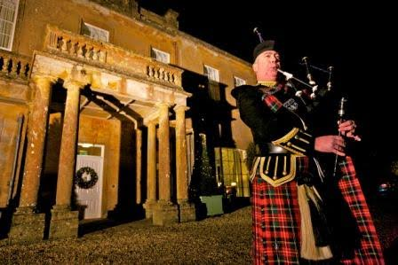

Hello, my name is Robert Walker, I have been playing the Highland Bagpipes for 45 years.
My passion allows me to offer my services as a Bagpiper to many Local Parades and Events as well as offering services to the public playing at Weddings, Funerals, Burns Night celebrations, anniversaries, New Year Eve events and birthdays.
The Sound of the Bagpiper is ideal for any ‘opening event’ and will seize the moment, lending extra emotion to the event. The visual image of the ‘Lone Piper’ will create a memorable occasion to treasure for a very long time.
